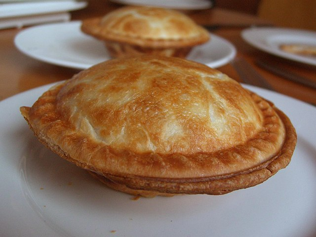

Chicken and Mushroom Pie

About Chicken and Mushroom Pie
What can you do with some leftover chicken, that's not enough for another meal on it's own? Make Chicken and mushroom pie, of course! The mushrooms help bulk up the pie and give it extra flavour. And it's easy to make!
Ingredients
Crust:
- 110g plain flour
- 50g cooking margarine
- Pinch of salt
Filling:
- Bits of chicken (cooked or uncooked)
- Shitake mushrooms
- One onion or leek
- One stock cube
- Water
- Corn flour
Steps
For the crust:
- Crumble the margarine into the flour and salt.
- Add a small splash of water, to bind all together.
- Let the pastry rest for half an hour in the fridge.
For the filling:
- If the chicken is uncooked, boil it til cooked through.
- Dice the onion or leek and fry it in a pan.
- Add the cooked chicken and mushrooms to the pan.
- Dissolve the stock cube into the water, then add to the pan.
- Add some corn flour to thicken the sauce.
- Season with salt and pepper to taste.
- Let the mix cool down before putting the pie together.
Putting it all together:
- Roll out almost two thirds of the pastry to the size of the tin.
- Chop off the edges of the pastry, leaving a little space to join the lid.
- Add the chicken and mushroom mix.
- Roll out the rest of the pastry to make the lid. If you are artistic, make patterns!
- Put the lid over the rest of the pie and crimp the edges of the pastry together.
- If there are no holes in the pastry, cut two small slits in to the top of the pastry, to let the steam out.
- Cook in the oven at a medium temperature, til the pastry is light brown and crunchy.
And enjoy your "recicled" meal!
Back to home page